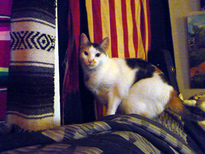

Testimonials
Laura M.,
San Francisco
“I have been using Kendal’s services for 4 years now and am so grateful that I have found her. It started with my housesitter being unavailable to sit my cat while I was traveling.Kendal was available for an interview and was fortunately able to take Simba. The references were very positive even to the point of my cat being happier there than at home. The first trip I was very nervous. Kendal contacted me via email and took my calls and Simba was fine. The second trip – I found that he had cleared out a spot in his closet and put a cozy rug down – because that is where Simba liked to hang out the first trip. The third trip it was under the sink. I knew I had found a hero for Simba, someone who would rearrange their space around his needs. He is a very shy cat. I know also that he sleeps at Kendal’s head and sits next to him to be brushed. He (Simba) comes home very playful. Take two – I got a dog – now I need to travel and have a dog and a cat that need care. No problem. Izzi is happy to see the cat carrier come out – she knows she is going to Kendal’s. She is excited to see Kendal and she comes back very healthy and happy. Her coat is good and sleek; she eats well. She has a hard time deciding what she should do – she is happy to see me and wants to hang with Kendal. I am lucky to have found someone who is sensitive to my beauties’ needs.” -- Laura M., San Francisco
Deb and Dustin,
Austin
“We started working with Kendal a few months ago and we have been extremely happy with his dog sitting service. Our pup, Gloria, literally pranced off with Kendal the last time I dropped her off. We chose to go with Kendal because our dog has a tendency to get sick when we are away, mostly, I think, out of loneliness. Kendal always sends us updates when we are away, which is fantastic. The last time he said, “I hope you don’t mind if she sleeps in my bed!” Gloria is in heaven there and comes home healthy. We had one situation where she did need some medication and Kendal was happy to pick it up from the drug store and manage her daily dosage. Kendal has done a terrific job.” -- Deb and Dustin, Austin
Laura M.,
San Francisco
“I have been using Kendal’s services for 4 years now and am so grateful that I have found her. It started with my housesitter being unavailable to sit my cat while I was traveling.Kendal was available for an interview and was fortunately able to take Simba. The references were very positive even to the point of my cat being happier there than at home. The first trip I was very nervous. Kendal contacted me via email and took my calls and Simba was fine. The second trip – I found that he had cleared out a spot in his closet and put a cozy rug down – because that is where Simba liked to hang out the first trip. The third trip it was under the sink. I knew I had found a hero for Simba, someone who would rearrange their space around his needs. He is a very shy cat. I know also that he sleeps at Kendal’s head and sits next to him to be brushed. He (Simba) comes home very playful. Take two – I got a dog – now I need to travel and have a dog and a cat that need care. No problem. Izzi is happy to see the cat carrier come out – she knows she is going to Kendal’s. She is excited to see Kendal and she comes back very healthy and happy. Her coat is good and sleek; she eats well. She has a hard time deciding what she should do – she is happy to see me and wants to hang with Kendal. I am lucky to have found someone who is sensitive to my beauties’ needs.” -- Laura M., San Francisco
Wendy,
Austin “When I first adopted my sweet lab mix, Otis, I was afraid that boarding him in a kennel might be traumatic for him, since he came from the shelter system. Sure enough, after three nights in a local, highly-rated kennel facility, Otis came back wild-eyed and shaken. He literally dragged me out the door and took several days to get back to normal at home. At a loss for what to do, I searched Craigslist for an alternative to boarding kennels, which is how I found Kendal. I am so thrilled to have found someone like Kendal, who clearly loves dogs and provides a loving home-away-from home for my baby. Otis loves to stay with Kendal, and always comes home happy and mellow, just like he left. Kendal will pick up and drop off in the city, which is a great perk, as well. He is highly recommended.” -- Wendy, Austin
“When I first adopted my sweet lab mix, Otis, I was afraid that boarding him in a kennel might be traumatic for him, since he came from the shelter system. Sure enough, after three nights in a local, highly-rated kennel facility, Otis came back wild-eyed and shaken. He literally dragged me out the door and took several days to get back to normal at home. At a loss for what to do, I searched Craigslist for an alternative to boarding kennels, which is how I found Kendal. I am so thrilled to have found someone like Kendal, who clearly loves dogs and provides a loving home-away-from home for my baby. Otis loves to stay with Kendal, and always comes home happy and mellow, just like he left. Kendal will pick up and drop off in the city, which is a great perk, as well. He is highly recommended.” -- Wendy, Austin
Deb and Dustin,
Austin
“We started working with Kendal a few months ago and we have been extremely happy with his dog sitting service. Our pup, Gloria, literally pranced off with Kendal the last time I dropped her off. We chose to go with Kendal because our dog has a tendency to get sick when we are away, mostly, I think, out of loneliness. Kendal always sends us updates when we are away, which is fantastic. The last time he said, “I hope you don’t mind if she sleeps in my bed!” Gloria is in heaven there and comes home healthy. We had one situation where she did need some medication and Kendal was happy to pick it up from the drug store and manage her daily dosage. Kendal has done a terrific job.” -- Deb and Dustin, Austin